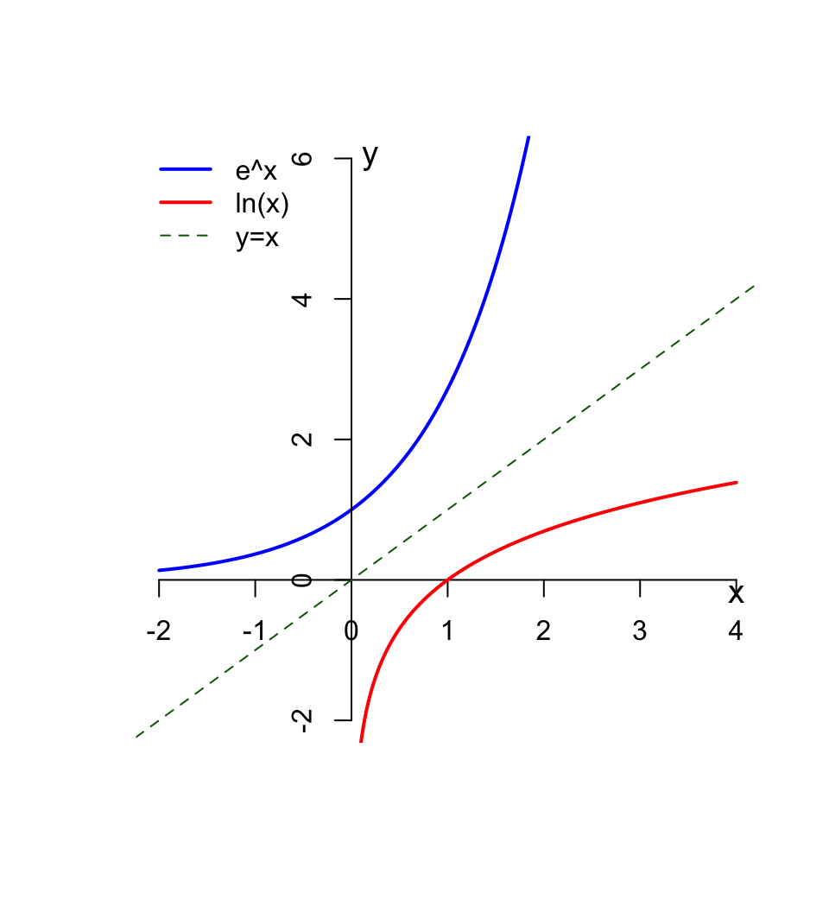
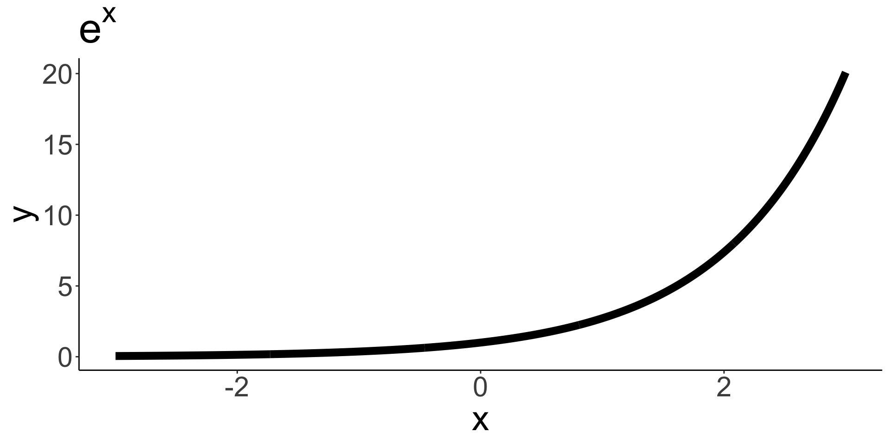
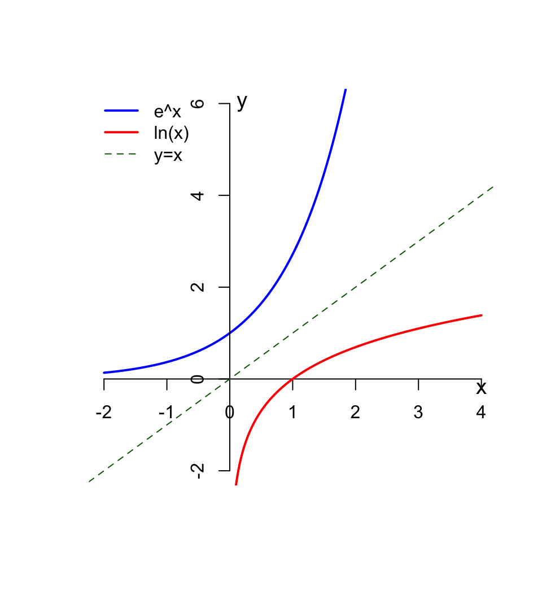
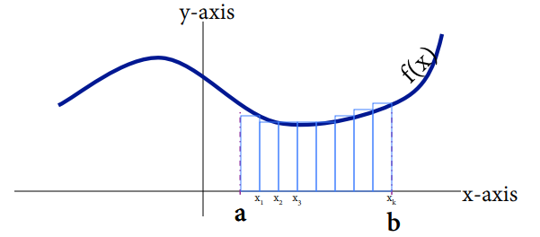
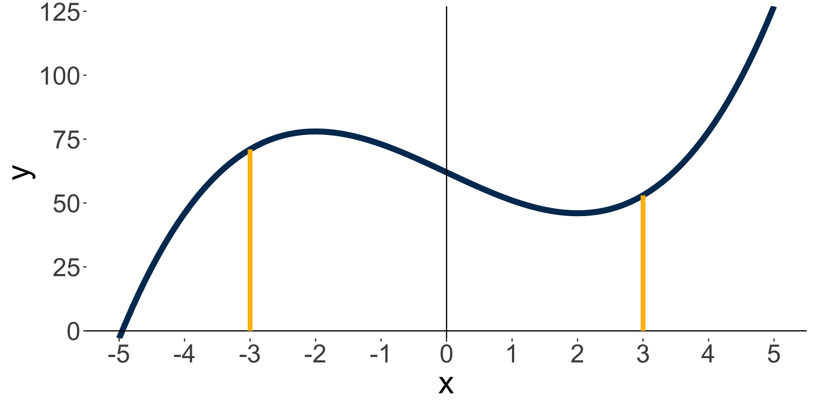
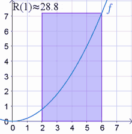
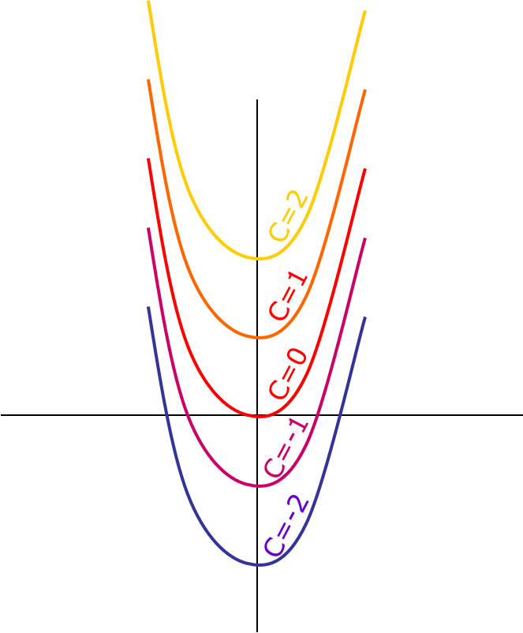
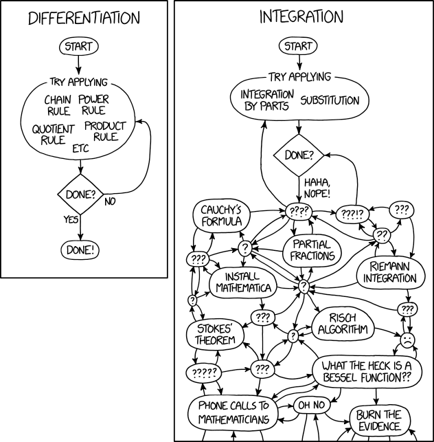
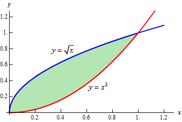

Introduction to Integration
Bren Calculus Workshop
Carmen Galaz García, Ph.D.
Bren School of Environmental Science & Management
Last updated: Sep 21, 2025
Materials have been adapted and expanded from Nathaniel Grimes work for the Bren Calculus Workshop.
Problem set review
How did everyone feel about the problem set?
Any questions?
Exponential function revisited
Remeber: the exponential function \(e^x\) is the number \(e\) raised to the \(x\) power.
A reasonable question would be:
Given \(y\), what is the \(x\) such that \(e^x = y\)?
Natural logarithms
Natural logarithms
If \(y>0\) then \(\ln(x)\) is the exponent you need to raise \(e\) to in order to get \(y\).
This means:
\[ \begin{align} \ln(e^x) &= x \\ e^{\ln(y)} &= y \end{align} \]
In other words, \(\ln(x)\) is the inverse of the exponential function \(e^x\).
Examples
\(\ln(e^3)\)
\(\ln(\frac{1}{e})\)
\(\ln(1)\)
\(\ln(0)\)
\(\ln(-7)\)
Natural logarithms
If \(y>0\) then \(\ln(x)\) is the exponent you need to raise \(e\) to in order to get \(y\).
This means:
\[ \begin{align} \ln(e^x) &= x \\ e^{\ln(y)} &= y \end{align} \]
In other words, \(\ln(x)\) is the inverse of the exponential function \(e^x\).
Examples
\(\ln(e^3) = 3\) because 3 is the power of \(e\) needed to get \(e^3\).
\(\ln(\frac{1}{e}) = \ln(e^{-1}) = -1\)
\(\ln(1) = 0\) because 0 is the exponent we need to raise \(e\) to to get 1
\(\ln(0)\) does not exist, because there’s no number we can raise \(e\) to to get 0
\(\ln(-7)\) does not exist, because \(e\) to any number always be positive
Natural log properties

Properties
\(\ln (e^x)=x\)
\(\ln(xy)=\ln x+\ln y\)
\(\ln(\frac{x}{y})=\ln x-\ln y\)
\(\ln(x^y)=y \ln x\)
Using logarithms to solve equations
✏️ Solve for \(t\) in the equation \(Pe^{rt} = A\).
Properties
\(\ln (e^x)=x\)
\(\ln(xy)=\ln x+\ln y\)
\(\ln(\frac{x}{y})=\ln x-\ln y\)
\(\ln(x^y)=y \ln x\)
Using logarithms to solve equations
✏️ Solve for \(t\) in the equation \(Pe^{rt} = A\).
\[ \begin{align} Pe^{rt} &= A \\ e^{rt} & = \frac{A}{P} \\ rt &= \ln\left(\frac{A}{P}\right) \\ t &= \frac{\ln(A)-\ln(P)}{r} \end{align} \]
Derivative of natural log
Derivative of natural log
The derivative of the natural logarithm is
\[ \large \frac{d}{dx}\ln x=\frac{1}{x} \]
Math uses:
Allows us to more easily handle exponents \((e^x)\)
Surprisingly simple derivative!
Important in integration
Real World Uses
Time and growth Problems
Differential equations
Example
✏️ Find the derivative of \(y=\ln(x^2)\).
Example
✏️ Find the derivative of \(y=\ln(x^2)\).
A solution with \(u\)-substitution.
\[ \begin{align} y=\ln(u)& &u=x^2\\ \frac{dy}{du}&=\frac{1}{u} &\frac{du}{dx}=2x \\ \frac{dy}{du}\frac{du}{dx}&=\frac{2x}{u} &\text{By Chain Rule}\\ \frac{dy}{dx}&=\frac{2x}{x^2}\\ \frac{dy}{dx}&=\frac{2}{x}\\ \end{align} \]
\[ \begin{align} \text{A) }5+\ln(3x)=7 & &\text{B) } e^{5x-0.2}=10 \end{align} \]
Solutions
\[ \begin{align} 5 + \ln(3x) &= 7 \\ \ln(3x) &= 2 \\ 3x &= e^2 \\ x & = \frac{e^2}{3} \\ \end{align} \]
\[ \begin{align} e^{5x-0.2} &= 10 \\ \ln(e^{5x-0.2}) &= \ln(10) \\ 5x-0.2 &= \ln(10) \\ 5x &= \ln(10) + 0.2 \\ x &= \frac{\ln(10) + 0.2}{5} \end{align} \]
To take the derivative of \(f(x) = x\ln(x)\) we can use the product rule: \((fg)' = f'g + fg'\). Using this we have that
\[ f'(x) = 1\ln(x) + x\frac{1}{x} = \ln(x) + 1. \]
Solutions
1. Initial population at \(t = 0\)
\[ \begin{aligned} P(0) &= 200 \, \ln(1 + 0.5 \cdot 0) + 50 \\ &= 200 \, \ln(1) + 50 \\ &= 0 + 50 \\ &= 50 \end{aligned} \]
The initial population is 50,000 individuals.
2. Instantaneous growth rate at \(t = 6\) months
The derivative of \(P(t)\) is:
\[ \begin{aligned} P'(t) &= \frac{d}{dt} \big[200 \, \ln(1 + 0.5 t) + 50 \big] \\ &= 200 \cdot \frac{1}{1 + 0.5 t} \cdot 0.5 \\ &= \frac{100}{1 + 0.5 t} \end{aligned} \]
At \(t = 6\):
\[ \begin{aligned} P'(6) &= \frac{100}{1 + 0.5 \cdot 6} \\ &= \frac{100}{1 + 3} \\ &= \frac{100}{4} \\ &= 25 \end{aligned} \]
The population is growing at 25,000 individuals per month at \(t = 6\).
How do we find the area under this curve?
How do we find the area under this curve?
Areas of rectangles are easy to find (base \(\times\) height!). We can approximate the are by adding the area of rectangles.
Riemann sums
Approximate the area under the curve from \([-3,3]\) with \(\Delta x=1\) and \(k=6\)
| x | y |
|---|---|
| -3 | 71 |
| -2 | 78 |
| -1 | 73 |
| 0 | 62 |
| 1 | 51 |
| 2 | 46 |
| 3 | 53 |

Riemann sums
Start at one end of the interval \([a,b]\)
Evaluate the function at \(f(a)\)
Step away from \(a\) by some small amount called \(\Delta x\)
Multiply \(f(a)\Delta x\) to get the the area of the first rectangle.
Repeat the same steps above, now starting with \(\Delta x\) as the bottom left corner of the next rectangle. Repeat until you cover the area with rectangles of width \(\Delta x\).
Sum up the area of all \(k\) rectangles
\[ R(f(x), \Delta x)= \underbrace{f(x_1)\Delta x+f(x_2)\Delta x+...f(x_k)\Delta x}_{\text{Sum of area of rectangles with width $\Delta(x)$} } \]
This is called a Riemann Sum.
Finer and finer Riemann sums
What if we try to make \(\Delta x\) (the width of the rectangles) really small? So we let \(\Delta x \to 0\). This will make the number of rectangles under the curve go to infinity.
Our estimation of the area will get better and better with more rectangles.

Take the area calculation we did before, but let \(\Delta x \to 0\) \[ \large \begin{align} \text{True Area} &= \lim_{\Delta x \to 0}R(f(x),\Delta x) \\ &= \int^b_af(x)dx \end{align} \]
We formally call this the integral of \(f(x)\) from \(a\) to \(b\) with respect to \(x\).
How do we calculate
Fundamental Theorem of Calculus
If \(f(x)\) is continuous over an interval \([a,b]\), and the function \(F(x)\) is defined by:
\[ \large F(x)=\int^x_af(t)dt \]
then \(F'(x)=f(x)\) over \([a,b]\).
This can be somewhat confusing. What it means intuitively is
to find the integral of \(\int f(t) dt\) we need to find a function \(F(x)\) whose derivative is \(f(x)\).
If we integrate a derivative, we should get the same function back as the original vice-versa
\[ \begin{align} \frac{d}{dx}\left[\int f(x)dx\right]&=f(x) &\text{Differentiation is the inverse of integration} \end{align} \]
\[ \begin{align} \int f'(x)&=f(x)+C &\text{Integration is the inverse of differentiation} \end{align} \]
Where did that \(C\) come from?
Example
Start with \(f(x) = x^2-4x+1\)
Then \(f'(x) = 2x-4\)
To find \(\int 2x-4\) we need to find a function whose derivative is \(2x-4\). What could it be?
If we integrate, we’ll have \(\int 2x-4 = x^2-4x+C\).
There is no way of knowing what the \(c\) should be without additional information
\(c\) is the \(x\)-intercept and we would have we have to solve for it with an initial value problem.

What is integration useful for?
Solving differential equations
Calculatin the total area under a curve
But also itegration can be tough
Before integrating ask yourself:

Notation
Notation
When you take an integral, the function in it can be in terms of any variable. This is just notation and it does not affect the result of the integration:
\[\int f(x) dx = \int f(t) dt = \int f(u) du.\]
Integration rules (1)
Sum and Difference Rules
Integration rules (1)
Sum and Difference Rules
The integral of a sum is equal to the sum of the integrals:
\[ \int[f(x)+g(x)]dx=\int f(x)dx+\int g(x)dx \]
The integral of the difference is equal to the difference of the integrals:
\[\int[f(x)-g(x)]dx=\int f(x)dx-\int g(x)dx \]
Integration rules (2)
Constant Rule
Integration rules (2)
Constant Rule
When a function is mulitplied by a constant, the constant can be taken out to multiply the integral:
\[ \int cf(x)dx=c\int f(x)dx \]
Integration rules (3)
Power Rule
Integration rules (3)
Power Rule
\[ \int x^ndx=\frac{x^{n+1}}{n+1}+C \text{, n}\ne -1 \]
Examples
✏️ Evaluate the following integrals.
Initial value problems
To find the \(C\) term in the integral, we need extra information
Often times that comes from being given an initial value
This means being given some value of the function, e.g. \(y(0)=a\) or \(y(12)=b\)
We use this information to solve for what \(C\) should be
Example
The marginal cost of producing \(x\) units of a product is:
\[ \frac{dC}{dx}=25-0.02x \]
Where \(C\) is the cost (in dollars), and \(x\) is the number of units produced. Given that producing 2 units of product costs $10, what is the complete cost equation?
Example
The marginal cost of producing \(x\) units of a product is:
\[ \frac{dC}{dx}=25-0.02x \]
Where \(C\) is the cost (in dollars), and \(x\) is the number of units produced. Given that producing 2 units of product costs $10, what is the complete cost equation?
We can integrate to find the original cost function \(C\):
\[C(x) = \int \frac{dC}{dx} dx = \int 25-0.02x.\]
Then: \[ \begin{align} \int 25-0.02x =&25x-\frac{.02x^2}{2}+D & \text{Solve with Power Rule}\\ 10&=25(2)-\frac{0.02(2)^2}{2}+D &\text{ Sub in $x=2$}\\ -39.96&=D\\ C(x)&=25x-\frac{0.2x^2}{2}-39.96 \end{align} \]
Indefinite vs. dfinite integrals
\[ \int f(x)dx \]
\[\int_a^b f(x) dx.\]
To find the area under the curve along an interval \([a,b]\), evaluate the antiderivative at the endpoints and subtract them.
Example
\[ \begin{align} \int^b_axdx &= \frac{1}{2}x^2\Big|^b_a\\ &= \frac{1}{2}(b)^2-\frac{1}{2}(a)^2 \end{align} \]
Example
✏️ Evaluate the following integral.
\[\int^2_{-1}3x^2dx\]
We have that: \[ \begin{align} \int^2_{-1}3x^2dx &= x^3\Big|^2_{-1}\\ &=(2)^3-(-1)^3 \\ &=9 \end{align} \]
Area between two curves
Example
✏️ Find the area of the shaded region in the graph below.
Example
We need to compute
\[\int^1_0 \sqrt{x} - \int^1_0 x^2.\]
Compute each piece carfully:
\[ \small \begin{align} \int^1_0 \sqrt{x} &=\frac{2}{3}x^\frac{3}{2} \Big|_0^1\\ &= \frac{2}{3}(1)^{\frac{3}{2}}-\frac{2}{3}(0)^{\frac{3}{2}} \\ &= \frac{2}{3}. \end{align} \]
\[ \small \begin{align} \int^1_0 x^2 &=\frac{1}{3}x^3\Big|_0^1 \\ &= \frac{1}{3}(1)^3-\frac{1}{3}(0)^3 \\ &= \frac{1}{3}. \end{align} \]
Then subtract the upper from the lower:
\[ \small \frac{2}{3}-\frac{1}{3}=\frac{1}{3} \]
\[ \begin{align} \text{A) }y=\frac{3}{x^2}, y(3)=2& &\text{B) }g(t)=3t^5-2t^3+16t-7 & &\text{C) } \int^4_2\frac{1}{2}x \end{align} \]
Solution (A)
We have that
\[ \begin{aligned} \int \frac{3}{x^2}\,dx &= 3 \int x^{-2}\,dx \\[6pt] &= 3 \left( \frac{x^{-1}}{-1} \right) + C \\[6pt] &= -\frac{3}{x} + C \end{aligned} \]
With the initial value \(y(3)=2\) we obtain
\[ \begin{align} 2 &= y(3) \\ &= -\frac{3}{3} + C \\ &= -1 + C \\ 3 &= C. \end{align} \]
Therefore the solution is \(-\frac{3}{x} +3\).
Solution (B)
We have that
\[\begin{aligned} \int \bigl(3t^{5}-2t^{3}+16t-7\bigr)\,dt &= \int 3t^{5}\,dt - \int 2t^{3}\,dt + \int 16t\,dt - \int 7\,dt \\[6pt] &= 3\frac{t^{6}}{6} - 2\frac{t^{4}}{4} + 16\frac{t^{2}}{2} - 7t + C \\[6pt] &= \frac{t^{6}}{2} - \frac{t^{4}}{2} + 8t^{2} - 7t + C \end{aligned}\]
Solution (C)
We get that
\[\begin{aligned} \int_{2}^{4} \frac{1}{2}x\,dx &= \frac{1}{2}\int_{2}^{4} x\,dx \\[6pt] &= \frac{1}{2}\left[\frac{x^{2}}{2}\right]_{2}^{4} \\[6pt] &= \frac{1}{4}\bigl(4^{2}-2^{2}\bigr) \\[6pt] &= \frac{1}{4}(16-4) \\[6pt] &= 3 \end{aligned}\]
Solution
Given:
\[\frac{dC}{dt} = 2t + 20\]
Integrate:
\[\int dC = \int (2t + 20)\,dt\]
\[C(t) = t^{2} + 20t + D\]
Initial condition:
\[C(2)=30 \ \ \text{(since 1964 is 2 years after 1962)}\]
\[30 = 2^{2} + 20\cdot 2 + D\]
\[D = 30 - 44 = -14\]
Thus:
\[C(t) = t^{2} + 20t - 14\]
Evaluate at \(t=20\) (1982):
\[C(20) = 20^{2} + 20\cdot 20 - 14\]
\[= 400 + 400 - 14\]
\[= 786 \text{ ppm}\]